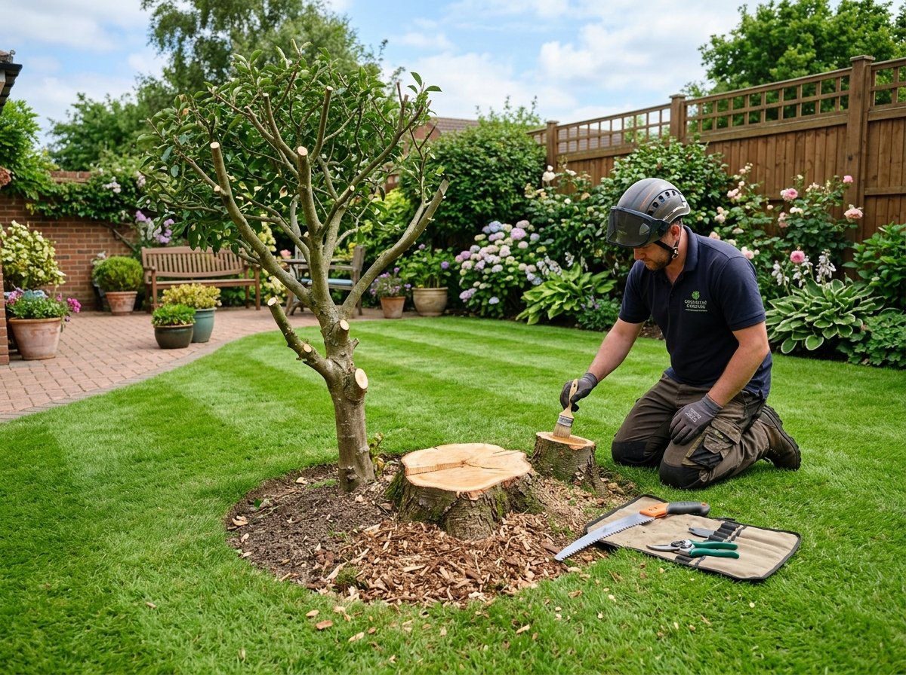

Affordable Small Tree and Stump Services
Overgrown small trees, dead saplings, and old stumps can crowd your garden, damage fences, and ruin the look of your yard. Traditional arborists charging thousands of dollars can be excessive for small tasks. At CreekCare, we specialize in small-scale tree felling, brush clearing, and stump digging for homeowners in Findlay Creek and Blossom Park who need efficient and affordable service.
We handle trees and large shrubs that can be safely fell from ground level (typically up to 15 feet in height). Once down, we cut the tree into manageable logs, bundle the branches for city pickup or compost, and tidy up the yard. For stump removal, we manually dig around the base, sever the root systems, and pry the stump out to leave a clean, level surface ready for dirt and grass seed.
What is Included:
- Safe ground-level felling of small trees and large overgrown shrubs.
- Limbing and bucking logs down to sizes suitable for firewood or disposal.
- Manual stump digging, root severing, and extraction of the main root ball.
- Yard clearing—raking woodchips, twigs, and sawdust to keep your property spotless.
Frequently Asked Questions
What sizes of trees can you safely remove?
We specialize in small yard trees, saplings, and heavy brush—typically trees under 15 feet in height that do not require complex climbing rigs or heavy machinery.
How do you handle stump removal?
We use a tractor if there's enough space, and if there isn't enough space we do it manually.
Do you haul away the wood and branches?
Yes, we cut branches down to manageable sizes and bundle them for city pickup, or we can haul them away entirely depending on your preference.